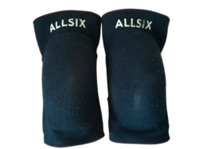
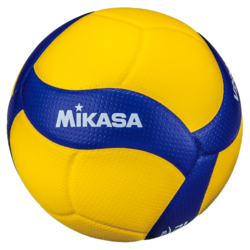

Les sensations : Le bien être de ce dépenser et de progresser en cohésion avec d'autres personnes.
Ce qui m'a moi donné envie d'en faire est d'avoir regardé Haikyu, un anime qui parle de volley que j'ai juste adoré ! Voici le résumé :
Shōyō Hinata, jeune élève au collège Yukigaoka, trouve un intérêt soudain au volley-ball après avoir vu un match de tournoi national inter-lycée à la télévision. Malgré sa petite taille, il est déterminé à suivre le même chemin que son joueur modèle du championnat national, surnommé le « petit géant ».
Voici au passage une de mes scènes préférée dans l'anime :
Sinon vous pouvez aussi tester gratuitement dans un Club et je vous dis que vous resterez c'est juste trop bien
Le volley est un sport peu cher, il ne coûte que peu cher en équipement si ce n'est des genouillères et un ballon
|  |  |
La license elle est aussi peu cher pour généralement 50 euros voir 100 dans les licences avec match. Le prix varie mais c'est toujours moins cher que du foot du basket ou la majorité dessports
Le volley par contre possède moins de terrain à l'extérieur que le basket ou le foot c'est beaucoup plus rare. Pour autant il se diversifie entre le beach volley à la plage et d'autres il est partout !
Pour ce qui est de la france, on est permier dans ce sport pour les deux dernier Jeux Olympiques c'est donc un sport qui fait la fiereté nationale et notre équipe est agréable à regader car son niveau est impressionant !